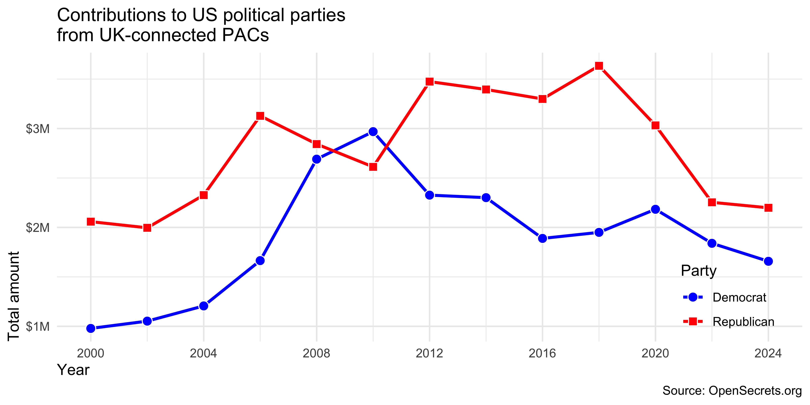
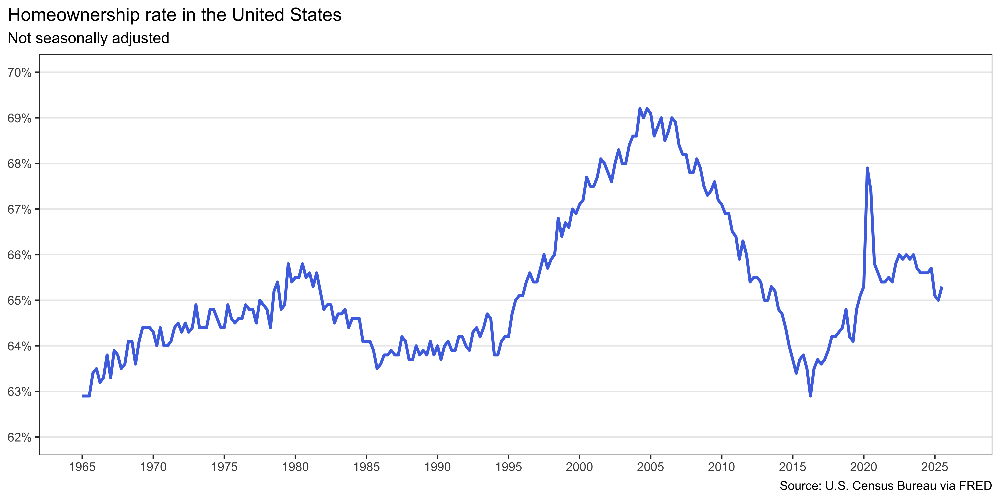
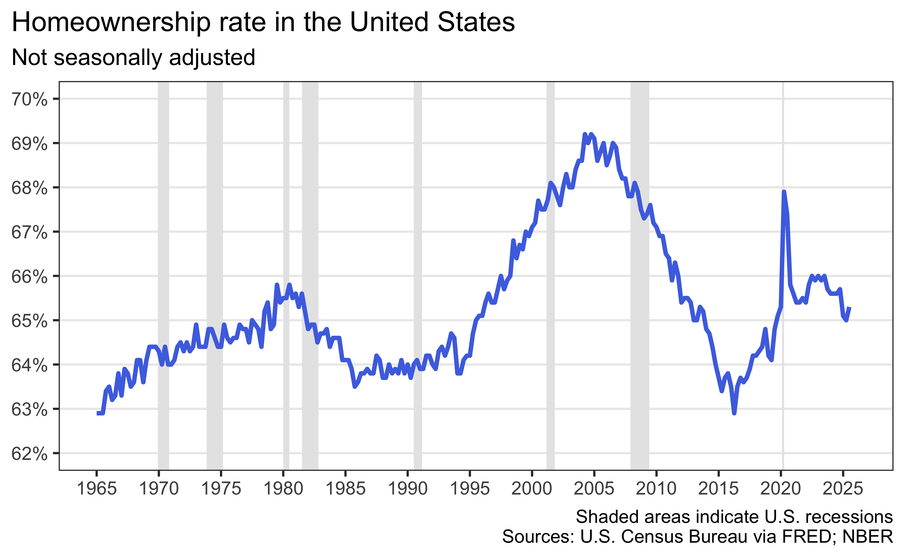
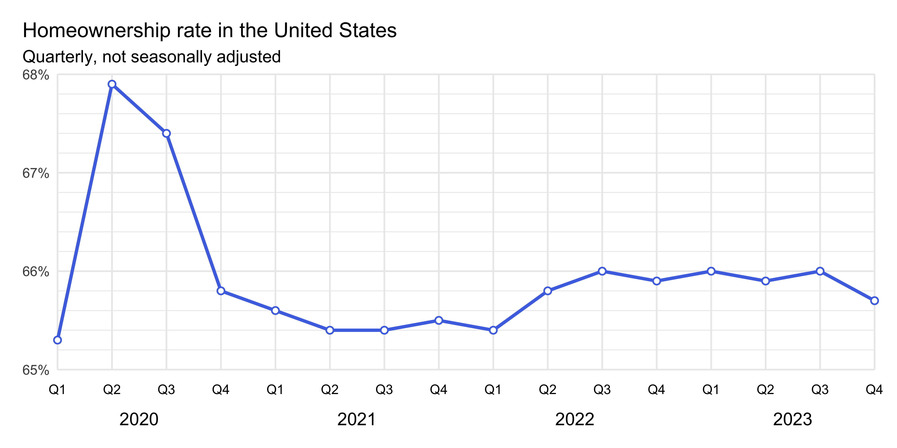
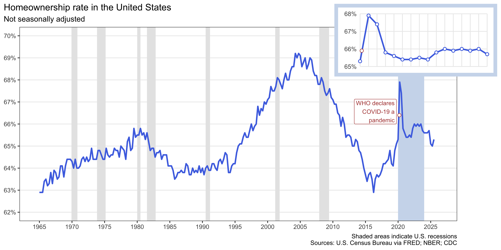
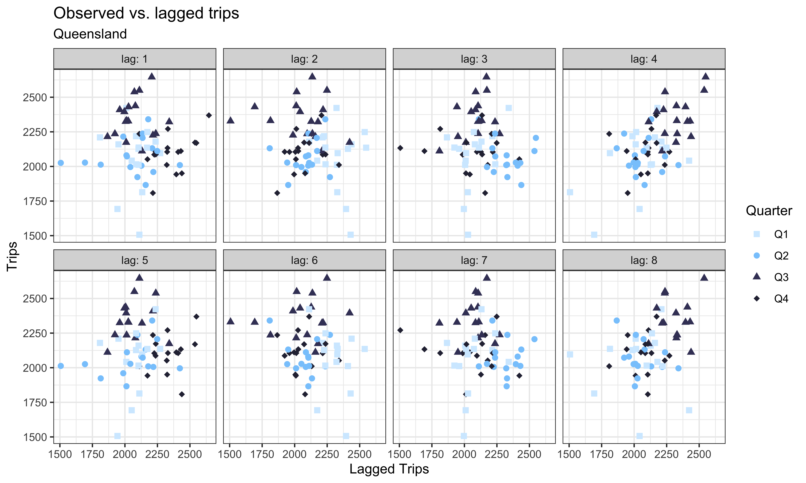
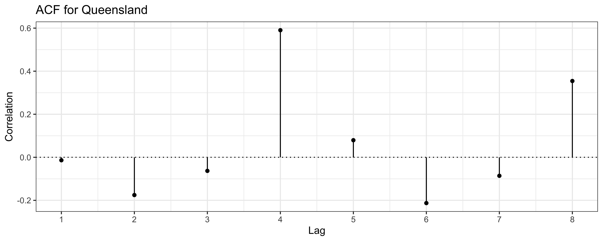

HW 2
Time of your life
For any exercise where you’re writing code, insert a code cell and make sure to label the cell. Use a short and informative label. If using a package other than tidyverse, load it on the code cell labeled load-packages on top of your Quarto document. For any exercise where you’re creating a plot, make sure to label all axes, legends, etc. and give it an informative title. For any exercise where you’re including a description and/or interpretation, use full sentences. Make a commit at least after finishing each exercise, or better yet, more frequently. Push your work regularly to GitHub. Once you’re done, inspect your GitHub repo to make sure you’ve pushed all of your changes.
Did you use an LLM / Generative AI tool to complete this assignment? If not, copy and paste the first option below at the end of each question. Otherwise, copy and paste all statements that describe how you used it, again at the end of each question. The purpose of the disclosure is for you to reflect on how you’re using AI in this course. It also helps learn whether and how students are effectively using AI.
- I didn’t use an LLM / Generative AI tool for this question
- I asked it to clarify the question.
- I asked it clarifying questions to better understand a concept.
- I asked it to help write code to answer the question.
- I gave it my code and asked it to help me fix it.
- I asked it about an error or why code would do something I didn’t want.
- I pasted the question prompt in AI and asked for help, but I wrote my answer myself.
- I pasted the question prompt in AI and copied and pasted at least some of the answer into my Quarto document.
- Other:______
If you selected any option(s) other than No, list your prompt(s) and include the name of the model you used and a link to the chat thread.
Additionally, make sure to cite any other non-AI sources you used to help you complete the question.
Your homework repositories are set up to Git ignore the resulting hw-2.html file and the folder that keeps the auxiliary files generated during rendering (hw-2_files). Therefore, you won’t see these files pop up in the Git pane. Before we grade your work, we will generate these files.
Question 1
Foreign Connected PACs. Only American citizens (and immigrants with green cards) can contribute to federal politics, but the American divisions of foreign companies can form political action committees (PACs) and collect contributions from their American employees. (Source: https://www.opensecrets.org/political-action-committees-pacs/foreign-connected-pacs/2024).
In this exercise you will work with data from contributions to US political parties from foreign-connected PACs. The data is stored in CSV files in the data directory of your repository/project. There are 13 files, each for an election cycle between 2000 and 2024.
a. Load all the data at once and stack them on top of each other with a column indicating which year the data is from with a single call to read_csv().
The ultimate goal of this exercise is to (re)create some plots – surprise surprise! But there is a nontrivial amount of data wrangling and tidying that needs to happen before you can do that. Below are the steps you should follow so that you can obtain the necessary interim objects we will be looking for as we review your work.
b. First, clean the names of the variables in the dataset with a new function from the janitor package: clean_names(). Then clean and transform the data such that you have something like the following at the end. Save the resulting data frame with a the name pac (don’t overwrite pac_raw) and print the top 10 rows of the result.
# A tibble: 2,639 × 6
year pac_name_affiliate country_of_origin parent_company dems repubs
<dbl> <chr> <chr> <chr> <dbl> <dbl>
1 2000 7-Eleven Japan Ito-Yokado 1500 7000
2 2000 ABB Group Switzerland Asea Brown Boveri 17000 28500
3 2000 Accenture UK Accenture plc 23000 52984
4 2000 ACE INA UK ACE Group 12500 26000
5 2000 Acuson Corp (Siemens AG) Germany Siemens AG 2000 0
6 2000 Adtranz (DaimlerChrysler) Germany DaimlerChrysler AG 10000 500
7 2000 AE Staley Manufacturing (Tate & Lyle) UK Tate & Lyle 10000 14000
8 2000 AEGON USA (AEGON NV) Netherlands Aegon NV 10500 47750
9 2000 AIM Management Group UK AMVESCAP 10000 15000
10 2000 Air Liquide America France L'Air Liquide SA 0 0
# ℹ 2,629 more rows
# ℹ Use `print(n = ...)` to see more rowsc. Then, pivot the data longer such that instead of dems and repubs columns you have a column called party with levels Democrat and Republican and another column called amount that contains the amount of contribution. Save the resulting data frame with a new name (don’t overwrite pac) and print the top 10 rows of the result.
d. Then, For each election cycle (year) calculate the total amount of contributions to Democrat and Republican parties from PACs with country_of_origin UK. The resulting summary table should have two rows for each year of data, one for Democrat and one for Republican contributions. Save the resulting data frame with a new name (don’t overwrite the input data) and print the top 10 rows of the result.
e. Then, recreate the following visualization. Hint: The points are filled plotting characters with color = "white" overlaid on the lines.

f. Find the countries with the 10 highest number of contributions and create a similar plot as above, but this time with each of the top 10 countries in a separate facet. Hint: The exact plot to recreate is not shown, but the redacted and annotated version below should give you a good idea of what the final plot should look like.

g. Describe in 2-3 sentences what you observe in terms of trends over time in the plot you created in the previous part. Make sure to compare across (election) years, parties, and countries.
Question 2
Homeownership in the US. The inspiration and the data for this exercise comes from https://fred.stlouisfed.org/series/RHORUSQ156N. The two datasets you’ll use are homeownership-rates.csv and recessions.csv, both of which are in the data folder of your repository in a subfolder called homeownership.
a. In a single pipeline, load the homeownership-rates.csv using read_csv(), and making sure the resulting data frame has variables called date (originally observation date) and homeownership_rate (originally RHORUSQ156N). In a separate pipeline, load the recessions.csv data and make sure variable names are snake_case.
b. Create the following visualization.

c. Identify recessions that happened during the time frame of the homeownership_rate dataset and report how many do and do not overlap with the time frame of the homeownership_rate dataset.
d. Now recreate the following visualization. The shaded areas are recessions that happened during the time frame of the median_housing dataset. Hint: The shaded areas are “behind” the line.

e. Create a subset of the homeownership_rate dataset for data from 2020 to 2023 (inclusive). Add two columns: year and quarter. year is the year of the date and quarter takes the values Q1, Q2, Q3, or Q4 based on date. Hint: These are data from the US, where the fiscal year starts in January. The first three months of the year are Q1, the next three months are Q2, and so on.
f. Create the following visualization.

g. Finally, bring together your plots from part (d) and part (f) into a single figure where the quarterly plot is inset inside the larger plot with recessions to recreate the following visualization. Hint: You can use the inset_element() function from the patchwork package for this.
Note that the visualization also has an annotation marking the date WHO declared COVID-19 a pandemic (March 11, 2020). You should carefully calculate where to place this annotation on the x-axis based on the date variable in the data. The y-axis placement is up to you, but try to make it look similar to the plot below (exact match isn’t needed) and also make sure it does not overlap with any of the data points or lines in either plot. Then, include a 2-3 sentence description of how you decided where to place the annotation and how you implemented that decision. Feel free to augment your description with code snippets if you think that helps clarify your approach.

Question 3
“This episode of Bluey is called Relax”
The inspirations for this exercise are my favorite cartoon, Bluey, and the fact that I’m headed to Australia for a conference, ICOTS 12, in July 2026. Additionally, Monash University, in Australia, is home to a number of fantastic statisticians, including Professor Di Cook, whose work we’ll learn more about in the visual inference module, and Professor Rob J. Hyndman, who works on time series and forecasting.
The data come from Tourism Research Australia and are available in the data folder of your repo as holidays.csv.
Note: In the land down under, Q1 is June-August, Q2 is September-November, Q3 is December-February, and Q4 is March-May. 🤯
a. Load the data and plot the number of trips on the y-axis for each Australian state over time on the x-axis (represented in quarters). Use separate lines to represent years and separate facets to represent states. Arrange the facets so that there is a shared x-axis labeled as Q1, Q2, Q3, Q4. Use appropriate labels and titles to make the plot informative. In 2-3 sentences, comment on any trends the visualization uncovers, e.g., differences between states, differences between years within states, seasonal patterns within states, etc. Make sure to pay attention to figure aspect ratio as there are many states / facets!
b. Create a subset of the data for Queensland (Bluey’s home state) and Tasmania only, and using this dataset (and a bunch of wrangling / transforming / summarizing as needed), recreate the following visualization displaying the relationship between the observer number of trips vs. the lagged number of trips in Queensland. Then explain in 2-3 sentences what the plot reveals about high and low tourism periods in Queensland and any seasonality you observe.
Some important features of the plot to note:
- The points are colored by
quarterusing the"bluey"color palette from the blueycolors package. - There are separate panels for each lag and these are labeled
lag: 1,lag: 2, etc.

c. Create the same plot as above, but this time for Tasmania, using the a different palette from the blueycolors package (not "bluey"). Then explain in 2-3 sentences what the plot reveals about high and low tourism periods in Tasmania and any seasonality you observe.
d. Finally, create two ACF plots, one for each of the relationships you visualized and commented on in parts (c) and (d). Of course, first I need to tell you what an ACF plot is. An ACF plot (short for autocorrelation function plot) is a visualization that shows the correlation of a time series with its own lagged values over different time lags. It helps to identify patterns, trends, and seasonality in time series data by displaying how the current values of the series relate to its past values at various intervals. It distills the information in scatterplots like those you created in parts (c) and (d) into a more compact form. Below is the one for Queensland that you will recreate, and then you will create a similar one for Tasmania.
Some important features of the plot to note:
- You will first need to calculate the autocorrelations for lags 1 to 8 for the number of trips in Queensland. That is, correlation (
cor()) between the number of trips and the number of trips lagged by 1 quarter, lagged by 2 quarters, etc., up to lagged by 8 quarters, and separately for Queensland and Tasmania. - Then, you will plot these autocorrelations vs. lag (1 to 8) using points and lines. You can think of this as a lollipop plot, where the lollipops are vertical lines from 0 to the autocorrelation value at each lag, with a point at the top of each line.
- You will also need to add a horizontal dotted line at y = 0 to indicate zero correlation.
Once you have both plots, comment in 2-3 sentences on any similarities and/or differences you observe between the two states in terms of autocorrelations at different lags and explicitly state what that reveals about seasonality and tourism patterns in each state.

Question 4
Thank you. Make a plot that says “Thank you” on it. Get creative! You can make it however you like, e.g., annotation, geoms, fake data, etc. There will be points assigned to creativity for this exercise. So just annotating the plot with the letters would earn fewer points than a more creative approach. Also, use as little as defaults as possible, in terms of color scales, themes, etc. The plots you make will be shared with our guest speakers as part of a “thank you” note. If you would like your name shown on the plots shared with them, you should add your name somewhere on the plot, e.g., the caption. If you don’t want your name shown, just leave it out and the plot will be shared anonymously. (There are no points attached to adding your name to them, you can choose to share with your name or anonymously.)
Question 5
Read, digest, reflect. Review the feedback from your HW 1 and close the feedback issue on GitHub by clicking on “Close issue” at the bottom of the issue page. Write a brief reflection (2-3 sentences) on what you learned from the feedback, how (if at all) you’ve implemented what you learned in this assignment, what you plan to do same and/or differently in future assignments.